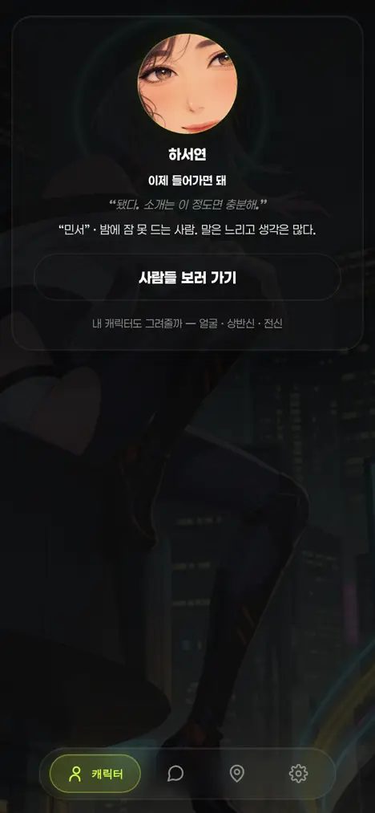
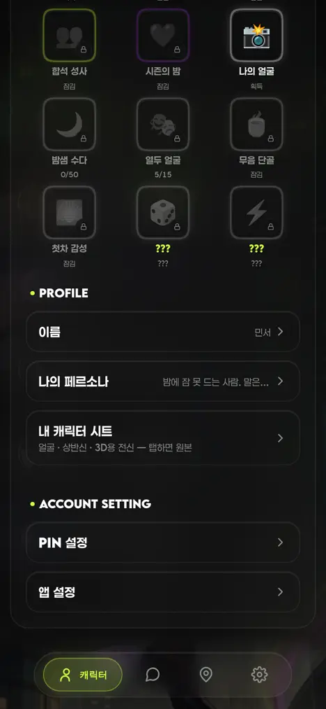

운영자 260803: "사용자 캐릭보드는 필요없고 그냥 한장만 얼굴 상반신 전신 3d용 전신 뽑아주면된 — 선택할 경우". 노브 = .github/scripts/yeta_meface.py(3컷 프레이밍 + 얼굴 칸 크롭) · yeta_face.py(톤/프레이밍 분리 · size 파라미터) · viewer/index.html(선택 진입점 2곳). 앱 캡처는 헤드리스 실렌더 · 그림 실물은 유료 dispatch 산출이라 여기 없다(규격은 아래 도해).
전1024×1024 얼굴 초상 1장 → me.avatar
몸이 없다 — 3D·전신 참조로 쓸 수 없고, 캐릭터가 어떤 차림인지도 알 수 없었다.
후1024×1536 한 장 3칸 → me.sheet + 얼굴 칸 크롭 → me.avatar
호출은 1회 그대로(과금 축 무변). 프사는 ① 칸 중앙 512²를 ffmpeg로 잘라 쓰므로 me.avatar 계약은 그대로 = 우상단 프사·버블 아바타 회귀 0.
첫 진입 마무리mut 텍스트 액션(자동 발사 0)

프로필도착분 있으면 시트 행 — 탭 = 원본

두 자리 모두 기존 정본 그대로 — 선택지 = `.yprof-genlink`(도형 없는 mut 텍스트 액션) · 시트 행 = `.yset-item`(설정 행) · 원본 열람 = 새 탭(앱 안 이미지 뷰어 신설 0). 진행 표시·일 상한·도착 폴은 `yMefaceStart` 기존 파이프 그대로다.
| 조각 | 내용 | sheet | face(구·롤백) |
|---|---|---|---|
| STYLE_A | 반실사 애니·글로시 painterly 화풍 | ○ | ○ |
| FRAME_1X1 | 정사각 1:1 · 얼굴이 프레임을 채움 | — | ○ |
| (신설) 3컷 프레이밍 | 세로 한 장 · 3칸 등분 · 동일 인물/헤어/의상 · ①얼굴 ②상반신 ③A-포즈 전신(머리~발끝·평평한 배경·소품 0) | ○ | — |
| STYLE_B | 미형·조명·무음동 밤 분위기·안전가드(no text/logo) | ○ | ○ |
| persona_line | 소개(about) 기반 인물 유도 — 원문 로그 출력 금지 유지 | ○ | ○ |
yeta_face.BASE는 이 세 조각의 연결로 재정의했다 — 조립 결과가 종전 문자열과 바이트 동일(983자)임을 실측했고, `tests/test_face_base.py`가 앞으로도 강제한다. 다른 호출처(yeta_face.py 10인 초상)는 손대지 않았다.
| 항목 | 결과 |
|---|---|
| BASE 바이트 동일 | True · 983 = 983 |
| 시트 프롬프트 조립 | 2,054자 · 3컷/A-포즈/머리~발끝 절 생존 · perfectly square 1:1 잔존 0 |
| 얼굴 칸 크롭(합성 1024×1536) | 512×512 산출 실측 |
| 앱 실렌더 | 마무리 선택지·프로필 시트 행 렌더 · JS 에러 0 |
| 게이트 | check_refs rc=0 · node --check(뷰어·게이트웨이) OK · python ast OK |
그림 실물은 유료 dispatch 1회가 있어야 나온다(op meface 일 상한 기본 2 · 자동 트리거 금지 규약 유지). 그때 칸 분할이 어긋나면 조정 지점은 두 곳뿐 — 프레이밍 문장(sheet_prompt)과 크롭 좌표(FACE_CROP).